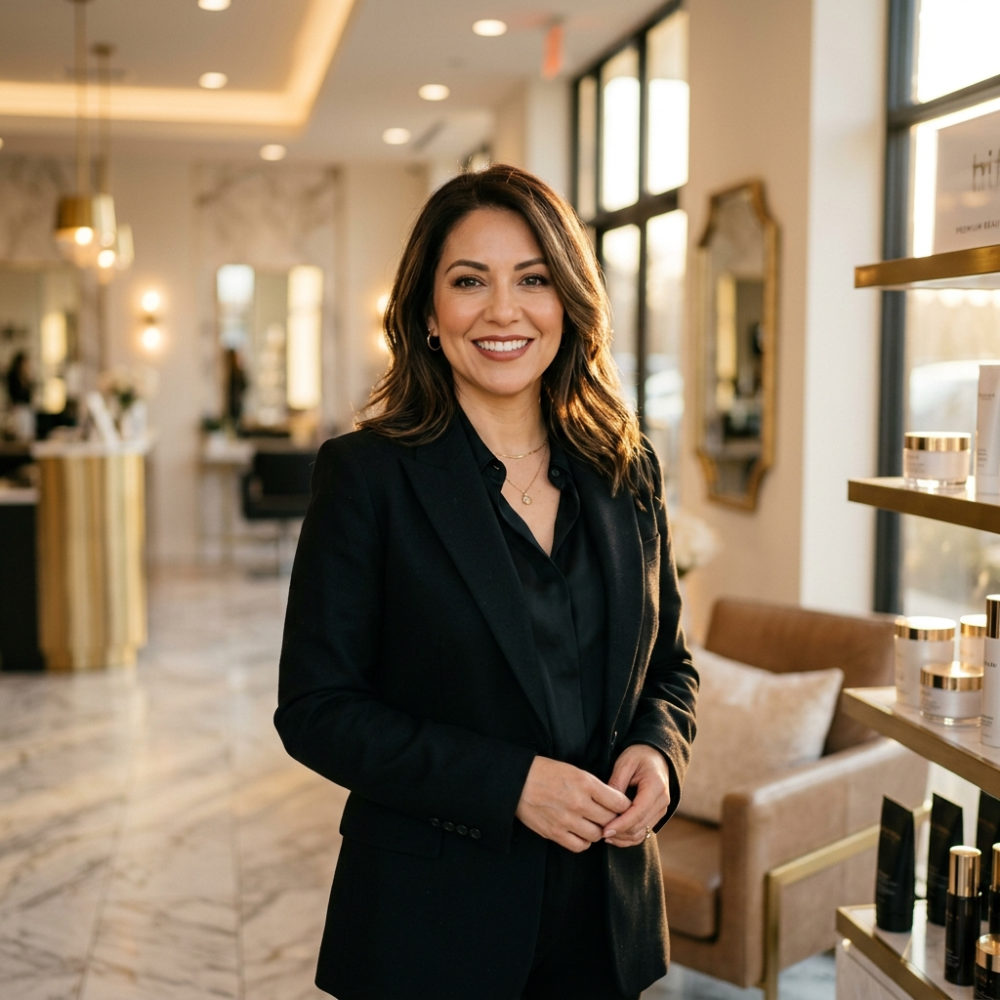

Fundadora y CEO de Delinearte, Lucy González ha consagrado más de 25 años al perfeccionamiento de la estética de la mirada, la cosmiatría clínica y las artes estéticas de alta costura. Su filosofía se basa en el visagismo matemático personalizado: no diseñar bajo modas pasajeras, sino esculpir y realzar la fisonomía y simetría natural únicas de cada rostro.
Como conferencista internacional de renombre, jueza tecnológica en campeonatos de Europa y Latinoamérica, y Master Lash & Brow Artist acreditada, Lucy lidera una de las boutiques estéticas más exclusivas del país, garantizando tratamientos de calidad clínica internacional con los más altos estándares de bioseguridad.

Inicia su carrera en la estética y el cuidado cutáneo clínico, especializándose en Cosmiatría Facial y Corporal.
Funda **Delinearte Academia**, convirtiéndose en pionera en la enseñanza y aplicación de micropigmentación de alta precisión en México.
Se especializa y acredita internacionalmente en el diseño y arquitectura avanzada de extensiones de pestañas con la firma premium **Minkys**.
Recibe la prestigiosa certificación como **Artista Beauty Angels** en Microblading & Shade, integrando técnicas exclusivas europeas a su portafolio.
Consolidación internacional como Ponente y Juez en campeonatos mundiales, destacando en eventos de Italia, España y Medellín, y como colaboradora en la revista europea *Lash Trend Magazine*.
Acreditada como **Técnica en Micropigmentación** (Centro Maromy, 2002), **Master en Micropigmentación Avanzada** (Asociación Mexicana, 2002), **Micropigmentación Médica** (2005) y **Microblading & Brows** (2013). Certificación avanzada en *Brow Strokes* y *Powder Brows* por Ugo Verni, y como Artista Beauty Angels (2019-2022).
Certificada en **Estética y Cosmiatría** (Instituto Eduem, 2000), **Plasma Rico en Plaquetas (PRP)** (2015), **Peeling Médico** y **Mesoterapia Facial y Corporal** (Esthetic Medical Center, 2016), y **Plasmapen Facial y Corporal** (Arte en Caras Academia, 2021).
Certificada por **Minkys** (2012), certificación oficial **SEP/CONOCER EC0611** (2019 y renovación 2023). Especialización en *Lash Modeling*, *Volumen Ruso* y *Laminación de Pestañas* por academias internacionales líderes (Amorche / Anna Volkova). Acreditada como **Master Lash Trainer** por She Academy (2021).
Certificada como **Master en Técnica Escultural y Aplicación de Uñas** por la firma internacional **O.P.I** (2000), con especialización en técnicas de Stamping y Mano Alzada con el maestro Adrian Bernal.